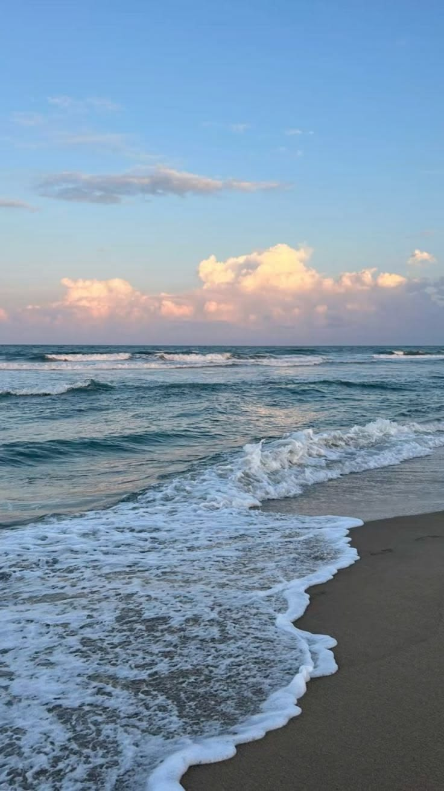
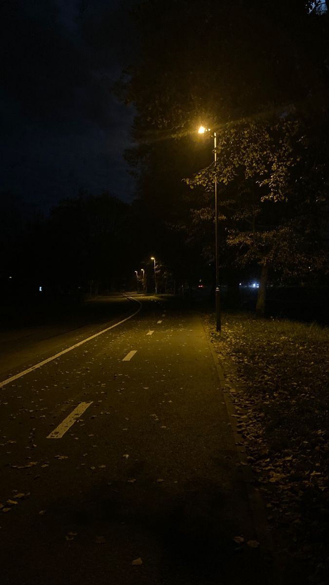
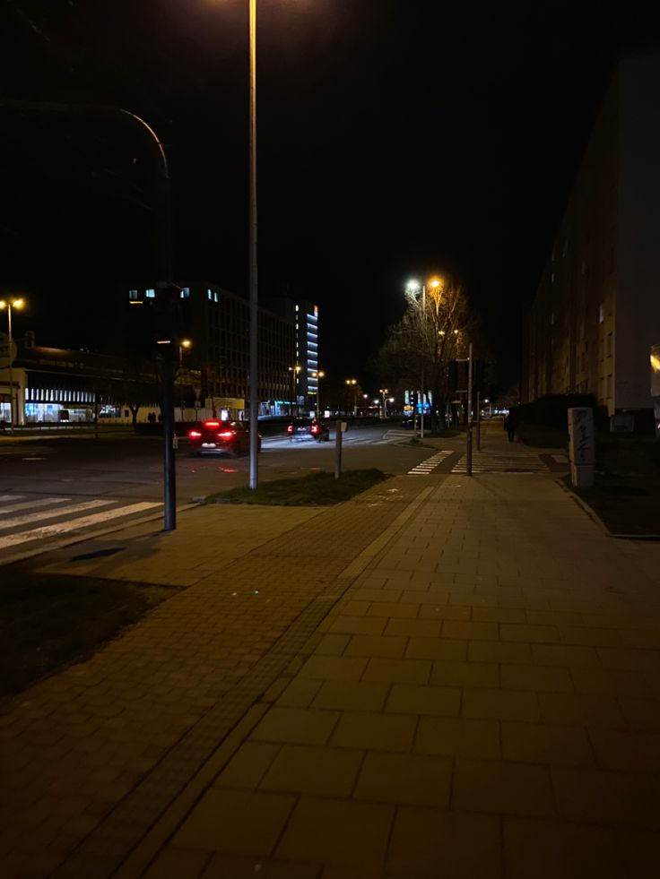

Изкуството да спираш времето
Фотографията за мен не е просто натискане на бутона на камерата, а начин на мислене и улавяне на света около нас. В рамките на обучението ми в 11 клас, аз активно изследвам как един-единствен кадър може да разкаже цяла история, да събуди емоция и да съхрани даден момент завинаги.
Фокусирам се върху изучаването на правилата за златната пропорция, работата с естествена и изкуствена светлина, както и последващата дигитална обработка на кадрите. Смятам, че фотографията е перфектният мост между реалността и моето лично творческо виждане.
Мои авторски фотографии



